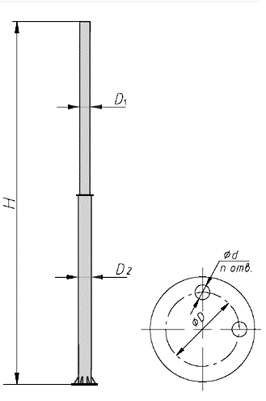
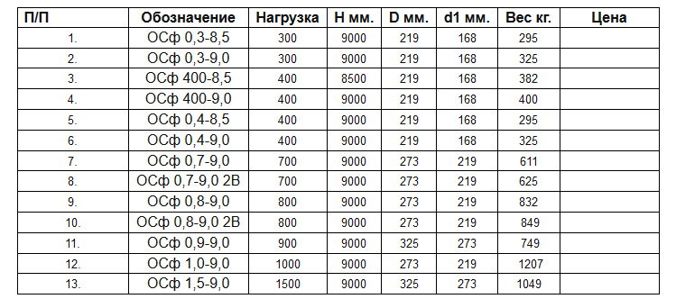

Опоры освещения силовые фланцевые предназначены для установки светильников, освещающих дороги и магистрали, воздушной подвески кабелей электрической сети наружного освещения, щитов различного назначения – рекламных, информационных и т. п.Установка фланцевых опор производится на железобетонное основание (фундамент). Фундамент состоит из подземного металлического элемента и бетона. При необходимости возможно применение выносной консоли. Соединение опоры и её подземной части осуществляется с помощью фланцевого соединения болтов или шпилек.
Опоры должны быть равнопрочными по любым поперечным осям и выдерживать максимальную суммарную нагрузку, эквивалентную нормированной нагрузке, приложенной к верхней части опоры. Опоры представляют собой стальные сварные ступенчатые металлические конструкции, стволы которых выполнены из труб (ГОСТ 8732-78, ГОСТ 10704-91). Сталь для элементов конструкции опор выбираются исходя из климатического района эксплуатации согласно СНиП II-23-81 «Стальные конструкции». В верхней части опоры на расстоянии 900 мм от верхнего края предусмотрено отверстие с гайкой М12 для заземления, на расстоянии 950 мм - отверстия диаметром 30 мм для ввода питающего кабеля. аналогичные отверстия могут быть выполнены в нижней части опоры на расстоянии 900 мм от нижнего края опоры.Покрытие методом горячего оцинкования – толщина покрытия от 70 до 120 мкм, что позволяет эксплуатировать изделие в течение 25 - 30 лет без восстановления защитного покрытия. Лакокрасочное покрытие грунтом и эмалью.
